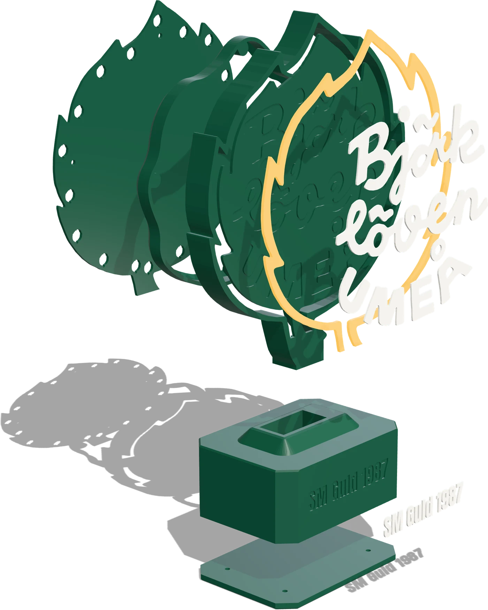

Platta 13 h 38 min · 125 g
Lövet
Fyra filer, ett objekt i tre färger. Utan kärnan blir lövet ihåligt.
- bjorkloven_sign.stl Grön
- bjorkloven_core.stl Vit
- bjorkloven_window.stl Gul
- bjorkloven_letters.stl Vit
Allt som behövs för att bygga LövGlöd är öppet: modellerna, byggbeskrivningen och koden. Du behöver en flerfärgsskrivare, lite lödning och en ESP32.

Lövet är klubbens logga i 220 mm. Gult band, vit text och grön yta skrivs ut som ett enda föremål i tre färger. Allt är parametrisk CAD, så delarna passar varandra.
STL-filerna är sorterade per platta och exporterade i gemensam position. Dra in dem i slicern tillsammans, svara ja på ”ett objekt med flera delar” och rotera ingenting.
Fyra filer, ett objekt i tre färger. Utan kärnan blir lövet ihåligt.
Grön, skriv ut med brim. Stor första yta och vassa hörn.
Sockel och text som ett objekt, bottenplattan bredvid.
Valfri. Håller LED-listen mot kärnan medan limmet härdar.
Räkna med en halvtimme
55 cm list på kant mot kärnans yttervägg. Häng limjiggen i tråget tills limmet härdat.
Ut genom trågets nedersta 22 mm och längs kabelspåret i svansens baksida.
Fyra M3 × 8. Huvudena hamnar i nivå med lövet. Tejpa aldrig över ventilerna.
Genom hålet i sockelns bakvägg, muttern från insidan. Gör det innan kortet åker i.
Svansen går 22 mm ner i sockeln. Ledarna följer schaktet ner i facket.
Två M3 upp genom fackets tak in i svansblocket. Ingenting syns utifrån.
Koppla ström och data enligt steg 3 nedan, och flasha kortet enligt steg 4.
ESP32 med USB-änden bakåt. Bottenplattan med fickorna nedåt, fyra skruvar.
Tre kopplingar: 5 V, jord och en datatråd. Strömmen från USB-C-uttaget delas mellan listen och kortet, så listen matas aldrig genom ESP32.
Uttagets röda ledare till listens 5V och till kortets 5V-pinne.
Svarta ledaren till listens GND och kortets GND. Utan gemensam jord blir datasignalen skräp.
GPIO13 genom 330–470 Ω till listens DIN. Löd motståndet nära listen och krymp över det.
1000 µF över 5V och GND där listen börjar, minus mot GND.
Kontrollera listen innan strömmen slås på
Trådfärger är ingen standard. Läs texten på kopparblecken (5V, DIN, GND) och löd på den ände där pilarna pekar bort. Omkastade 5V och GND kan förstöra listen direkt.
Gör det med kortet på bänken, innan det åker in i sockeln. Efter första gången uppdaterar lampan sig själv över WiFi.
Som tillägg i VS Code eller som kommandoradsverktyg.
Anslut ESP32 med USB-kabel och kör kommandona till höger.
Grön puls betyder att lampan väntar. Anslut mobilen till LövGlöd-Setup-XXXX, välj WS2812B eller APA102 och antal dioder.
Välj nätverk och skriv lösenordet. När glöden blir gul är lampan klar.
git clone https://github.com/markusbackman/lovglod cd lovglod pio run -t upload
Byggmiljöer, felsökning, OTA-signering och betakanalen finns beskrivna i repots README.
Instruktioner på GitHub